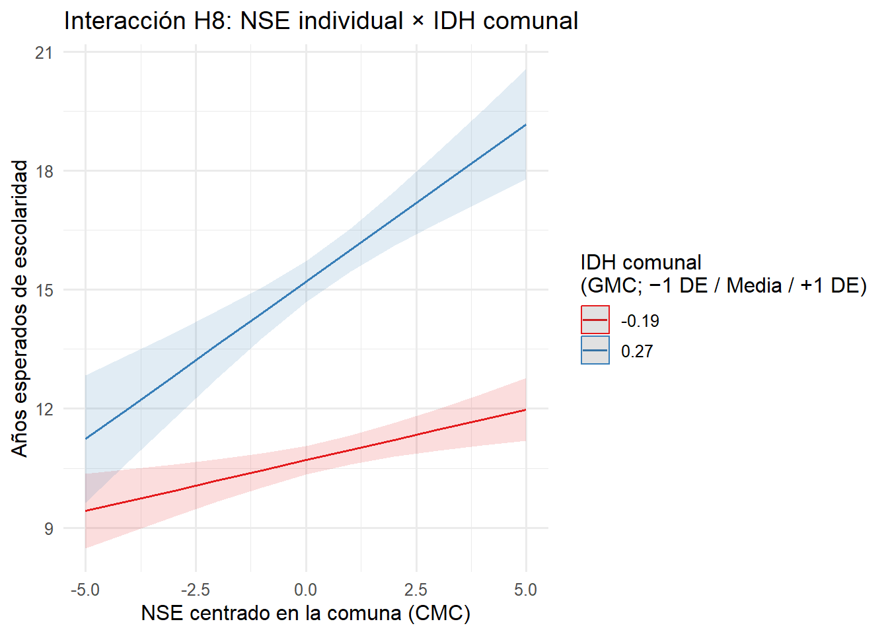

1 Abstract
La persistencia de la desigualdad educativa en el Gran Santiago cuestiona la promesa meritocrática del sistema escolar chileno y evidencia la reproducción de las ventajas de origen social. Este estudio indaga en qué medida factores individuales (nivel socioeconómico, género y participación social del hogar) y contextuales (tasa de empleo, oferta escolar e índice de desarrollo humano comunal) inciden en los años de escolaridad de la población. A partir de datos de la Encuesta CASEN 2022 (N = 22.706), se estiman modelos multinivel que consideran la anidación de personas en 32 comunas del Gran Santiago. Los resultados muestran que tanto los recursos familiares como las condiciones comunales influyen significativamente en la escolaridad promedio, y que contextos más favorables amplifican los retornos educativos del nivel socioeconómico. En conclusión, el enfoque multinivel permite comprender la desigualdad educativa como un fenómeno estructural y territorialmente situado, lo que refuerza la necesidad de políticas públicas que articulen intervención social con desarrollo local.
2 Introducción
La desigualdad educativa persiste como una de las principales barreras para la movilidad social en Chile y, en particular, en la Región Metropolitana de Santiago. A pesar de los avances en acceso a la educación básica y media en el país, las diferencias en escolaridad continúan reproduciendo brechas de ingresos, oportunidades laborales y participación cívica entre los distintos grupos sociales (Ministerio de Educación, 2023; Agencia de Calidad de la Educación, 2015; OECD, 2021). Esta persistencia interroga la promesa meritocrática inscrita en el sistema educativo y revela su lógica de reproducción social. A raíz de esto, entendemos la desigualdad educativa como la distribución desigual de oportunidades de acceso y logro escolar, influida por factores sociales, económicos y territoriales (Bellei et al., 2008). Desde las investigación sociológica se ha explicado como un proceso de reproducción social donde la escuela refuerza las ventajas de origen, es decir impulsada sobre todo por el capital económico (Bourdieu & Passeron, 2001).
Hasta ahora, la desigualdad educativa ha sido investigada mediante análisis que privilegian los resultados de pruebas estandarizadas y descripciones administrativas del sistema escolar (Soler & Fernández, 2021; Cimadamore & Catanni, 2008). Desde este enfoque, se ha prestado menos atención a cómo se combinan factores individuales con condiciones del entorno inmediato, como la oferta educativa local o el dinamismo laboral de los territorios. Este artículo busca abordar esa brecha integrando una perspectiva multinivel que permita explicar las diferencias en años de escolaridad en el Gran Santiago a partir de la interacción entre recursos familiares y condiciones comunales. En base a lo anterior, nuestra pregunta de investigación es ¿En qué medida los distintos factores de socialización —tanto familiares como territoriales— influyen en los años de escolaridad de los habitantes del Gran Santiago?
Para este estudio utilizaremos un enfoque multinivel que permite analizar cómo las trayectorias educativas se configuran por la interacción entre factores individuales (como el nivel socioeconómico, género o participación social) y contextuales (como la oferta escolar o la tasa de empleo comunal) (Finch et al., 2019). A diferencia de los modelos centrados únicamente en el individuo, esta perspectiva reconoce que el entorno territorial puede amplificar o moderar desigualdades. Así, permite capturar con mayor precisión cómo las condiciones estructurales inciden en los resultados educativos, reforzando la relevancia sociológica de abordar la desigualdad desde múltiples niveles de análisis (Romero et al, 2020).
Es fundamental destacar la relevancia de incluir variables contextuales en el análisis de fenómenos sociales, especialmente cuando se investigan desigualdades estructurales como la educativa. Las condiciones individuales como el nivel socioeconómico o las redes familiares y sociales no operan en el vacío, sino que se despliegan dentro de contextos territoriales que pueden reforzar, neutralizar o modificar sus efectos (Canales & Ibarrola, 2022). La interacción entre lo individual y lo contextual permite comprender con mayor profundidad cómo se configuran las trayectorias sociales, ya que factores como la oferta escolar o el dinamismo económico comunal no solo influyen directamente en los resultados educativos, sino que también potencian o mitigan las desigualdades preexistentes (Andréu, 2013).
Considerando lo anterior, la relevancia sociológica del estudio radica en su capacidad para incluir el análisis de la desigualdad educativa la articulación de factores estructurales tradicionalmente subestimados. Por un lado, se incorpora la participación social, como un indicador que permite observar cómo la ausencia de redes comunitarias limita los recursos simbólicos y prácticos disponibles para acompañar los procesos escolares, conectando lo educativo con la integración social (Bullones, 2022).
Por otro lado, se introduce la tasa comunal de empleo como una expresión concreta del dinamismo económico territorial, elemento clave para entender cómo los contextos locales amplifican o restringen las oportunidades educativas y los años de educación de sus habitantes (Villalobos & Mardones, 2022). Este enfoque permite a la sociología desentrañar los mecanismos invisibles de reproducción de la desigualdad dentro de los contextos educativos, vinculando agencia y estructura en contextos concretos. Así, este estudio contribuye a una sociología de la educación que reconoce la interdependencia entre estructura social, recursos comunitarios y trayectorias formativas, proponiendo una mirada más integral y situada sobre la reproducción de la desigualdad.
Diversas investigaciones han examinado cómo factores individuales y territoriales influyen en los niveles de escolaridad y, por extensión, en la reproducción de desigualdades sociales. Arita et al, (2015) analizaron la relación entre las condiciones objetivas de vida y el bienestar subjetivo en habitantes de dos colonias de estrato bajo en Culiacán, México. Mediante un estudio exploratorio transversal con una muestra de 108 personas adultas, identificaron que el nivel socioeconómico constituye una variable clave para el análisis de la calidad de vida, y que la educación opera como un indicador relevante de desigualdad social.
Complementariamente, Peláez & Rodríguez (2020) indagaron las desigualdades de género en la transición al primer empleo, utilizando datos de la Encuesta de Movilidad Social en México (2017), con una muestra representativa nacional de 17.665 casos. Su análisis destaca que el nivel educativo cumple una función mitigadora de las brechas de género en la inserción laboral temprana, y plantea la necesidad de incorporar analíticamente la transición escuela-trabajo como una dimensión clave en el estudio de la movilidad social.
Continuando con factores contextuales, se han realizado bastantes estudios que relacionan la calidad de vida y el nivel socioeconómico con el nivel educacional (González y Espinoza, 1994; Aria et al, 2015; Bullones, 2022). A partir de esto, se puede justificar la relevancia que tiene analizar más allá de características individuales, sino también enfocarse en los factores sociales y su impacto en el nivel educacional.
Por un lado, un análisis aplicado a los datos de TIMSS y PIRLS (Instituto nacional de evaluación educativa, 2011) en Italia utilizó un modelo multinivel multivariado para estudiar los logros académicos en lectura, matemáticas y ciencias en estudiantes de cuarto grado (N = 4.125, anidados en 239 cursos). El estudio incluyó variables individuales como género y nivel socioeconómico, y contextuales como recursos escolares y riqueza territorial. Los resultados revelaron una mayor influencia de los factores individuales sobre los contextuales, indicando que las condiciones estructurales del entorno, como la infraestructura escolar o el desarrollo económico provincial, no presentaron efectos significativos.
Por otro lado, Rivas & Terra (2024) realizaron un estudio cualitativo en barrios urbanos informales de Valparaíso, Chile, centrado en las percepciones de niñas y niños sobre su entorno habitacional. El estudio concluye proponer la inclusión de la oferta escolar por comuna como variable para evaluar las condiciones educativas locales. En este sentido, se incluyó la variable de oferta laboral operacionalizada por cantidad de escuelas por cada 10.000 habitantes dentro de la comuna.
Asimismo, se incluye el Índice de Desarrollo Humano Comunal como indicador de condiciones infraestructurales y sociales de cada comuna. Se considera relevante poder diferenciar el valor de este indicador, pues el contexto social está estratificado también urbanamente (Giménez, 2004). De este modo, se podrá incluir en el análisis una posible relación entre la desigualdad socioeconómica, no solamente entre personas, sino también entre comunas y si serán relevantes para el nivel educacional. Como se mencionó anteriormente (Aria et al, 2015; Bullones, 2022), las características sociales contextuales son de gran importancia para entender.
Finalmente es importante señalar que la selección la comuna de santiago no es azarosa, pues Cortés (2021) realizó un estudio sobre el Área Metropolitana de Santiago analizando la relación entre segregación residencial y acceso a servicios públicos locales, utilizando datos de precios de vivienda por bloque y medidas de accesibilidad a servicios como escuelas, hospitales y transporte. Los resultados subrayan que la segregación espacial impacta negativamente el acceso de los sectores más pobres a servicios públicos, limitando oportunidades laborales, educativas y sanitarias, y perpetuando la desigualdad urbana. Además, evidencia internacional como Shanghai respalda que la fragmentación municipal y la autonomía fiscal influyen significativamente en estos patrones y en la “doble desventaja” que enfrentan los residentes de bajos ingresos. Por último, es relevante la densidad poblacional de la Provincia de Santiago, pues acumula un 29.87% de la población total del país según el Censo del 2017 (Gobierno de Santiago, s.f.)
3 Objetivos e hipótesis
Objetivo general:
Analizar el rol de la familia y el entorno comunal como espacios de socialización que inciden en las trayectorias educativas, a través de su influencia en los años de escolaridad de los habitantes del Gran Santiago el año 2022.
Objetivos específicos
- Determinar en qué medida factores individuales como el nivel socioeconómico, el género y la participación social del hogar se asocian con los años de escolaridad.
- Analizar la influencia de factores comunales como la tasa de empleo, la oferta escolar y el IDH inciden en los niveles promedio de escolaridad en el Gran Santiago.
- Explorar cómo interactúan los factores familiares y comunales, evaluando si el impacto de las condiciones individuales -nivel socioeconomico- varía según el contexto territorial.
Hipótesis multinivel
Nivel 1 – Individual
H1. Cuanto más alto es el nivel socioeconómico (NSE) del hogar, más años de escolaridad alcanza el estudiante.
H2. Las mujeres completan, en promedio, menos años de escolaridad que los hombres.
H3. Provenir de un hogar con participación social aumenta los años de escolaridad frente a hogares carentes en redes comunitarias.
Nivel 2 – Contexto comunal
H4. Las comunas con mayor tasa de empleo presentan una escolaridad promedio más alta.
H5. Las comunas con mayor proporción de escuelas por 10.000 habitantes ofrecen más oportunidades y muestran mayores años de escolaridad.
H6. Las comunas que presentan un mayor IDH presentan una escolaridad promedio más alta.
Interacciones entre niveles
H7. El efecto positivo del nivel socioeconómico (NSE) sobre la escolaridad es más intenso en comunas con alta tasa de empleo; un mercado laboral dinámico potencia los recursos familiares.
H8. El efecto positivo del nivel socioeconómico (NSE) sobre la escolaridad es más intenso en comunas con un alto IDH
4 Datos, variables y métodos
El presente estudio utiliza la Encuesta de Caracterización Socioeconómica Nacional (CASEN) del año 2022, elaborada por el Ministerio de Desarrollo Social y Familia. La CASEN utiliza un diseño muestral probabilístico, estratificado por región, comuna y área urbana/rural, lo que garantiza representatividad en el territorio y población chilena.
Para la realización del modelo multinivel, se anilló en base a la selección de las 32 comunas perteneciente al Gran Santiago, de esta manera podemos controlar la influencia de comunas externas a nuestro análisis. Junto a esto, se trabajó con un total de 22.706 individuos (nivel 1) de 18 o más años, anidados dentro de las comunas (nivel 2). Además, en promedio hay 709 casos por cada una de ellas, de modo que es resulta óptima para la estimación de los efectos contextuales.
Variable dependiente
La variable dependiente años de escolaridad (esc) del presente modelo, se mide de manera continua, proviene del ítem de Educación y es usada de forma usual en la literatura (Bourdieu & Passeron, 2001; Soler & Fernández, 2021; Cimadamore & Catanni, 2008). Esta presenta un promedio de 12,6 años, junto con una desviación estándar de 4,1. Lo cual indica una alta dispersión en los distintos niveles educativos de la muestra de las comunas del Gran Santiago. Además, los rangos de esta van de 0 a 29 años de escolaridad.
Variables independientes de nivel 1 (individual)
La primera variable es sexo, recodificada en una variable dicotómica denominada female (1 = mujer; 0 = hombre). Su media es 0,539, lo que indica un leve predominio de mujeres en la muestra.
El nivel socioeconómico en la Encuesta CASEN se construye combinando el ingreso autónomo total del hogar —remuneraciones, pensiones y rentas de capital— ajustado mediante una escala de equivalencia que corrige por número de adultos, niños, personas con discapacidad y dependientes. Además, se consideran bienes y medios indirectos que reflejan la capacidad económica, como propiedades y vehículos. El ingreso ajustado se transforma en ingreso per cápita equivalente y se ordena a toda la población, clasificándose en tramos o deciles socioeconómicos. Esta segunda variable fue trabajada por la CASEN de forma continua del 1 a 7, con un promedio de 4,56 y una mediana de 5, indicando que la mayoría de la muestra se ubica en tramos socioeconómicos medios o medio-bajos. La desviación estándar es de 2,01, lo que refleja una distribución relativamente dispersa dentro de los tramos definidos.
La tercera variable es hogar carente participación social (hh_d_part), siendo recodificada como dicotómica, donde 1 indica ausencia de carencia y 0 presencia de carencia. Esta. se construyó considerando como participación social la pertenencia o involucramiento en diversas organizaciones, tales como juntas de vecinos, comunidades barriales, clubes de adulto mayor, centros de madres, comités de vivienda, redes de voluntariado, iglesias, comunidades de fe, centros culturales, talleres artísticos, clubes deportivos, sindicatos, asociaciones gremiales, partidos políticos, movimientos sociales y agrupaciones de defensa de derechos. También se incluyen otras formas de organización como grupos de apoyo mutuo o colectivos de interés específico, abarcando así ámbitos territoriales, comunitarios, religiosos, culturales, deportivos, gremiales y políticos, que reflejan la diversidad de la vida asociativa en la población. Presenta una media de 0,13 y su mediana es 0, lo que confirma la baja proporción de hogares con participación social activa dentro de la muestra.
| Statistic | N | Min | Pctl(25) | Median | Mean | Pctl(75) | Max | St. Dev. |
| esc | 22,706 | 0 | 11 | 12 | 12.60 | 16 | 29 | 4.11 |
| female | 22,706 | 0 | 0 | 1 | 0.54 | 1 | 1 | 0.50 |
| nse_numerico | 22,706 | 1 | 2 | 5 | 4.56 | 6 | 7 | 2.01 |
| part_social_num | 22,706 | 0 | 0 | 0 | 0.13 | 0 | 1 | 0.33 |
Variable independiente de nivel 2 (contextual)
La primera variable contextual es la tasa comunal de empleo efectivo (prop_empleo), que representa la proporción de personas que trabajaron al menos una hora durante la semana anterior por comuna. Su valor promedio es 0.554, con una desviación estándar de 0.063, y un rango 0.464 y 0.704. Esta oscilación refleja diferencias en el dinamismo económico de las comunas, lo cual puede incidir en las oportunidades educativas disponibles para sus habitantes.
La segunda variable contextual corresponde a la oferta educativa comunal (prop_pob_esc), la cual se operacionaliza mediante el número de establecimientos escolares por cada 10.000 habitantes de cada comuna. Su valor promedio es de 3.87, con una desviación estándar de 1.06. El rango corresponde a 4.12, con un mínimo de 1.99 y un máximo de 6.11. Por último, cabe mencionar que esta variable se construyó en base a los datos proporcionados por la Biblioteca del Congreso Nacional de Chile (2024), específicamente del sistema SIIT Estadísticas Territoriales.
La tercera variable contextual corresponde al índice de desarrollo humano comunal. Su valor promedio es 0.67, con una desviación estándar de 0.13. El rango corresponde a un 0.46, con un mínimo de de 0.5, y un máximo de 0.96. Esta variable se basa, al igual que su parte global, en 3 dimensiones: Vida larga y saludable, Educación y Nivel digno. No obstante, los indicadores se ajustaron para acoplarse mejor al nivel de medición. La dimensión de vida larga y saludable se mide con el indicador “Años de vida potencial perdidos”. La dimensión de “Educación”, se mide con los indicadores “Cobertura educacional” y “Años de escolaridad”. Por último, la dimensión de “Nivel de vida digna” se mide con el indicador “Ingreso per cápita”.
| Statistic | N | Min | Pctl(25) | Median | Mean | Pctl(75) | Max | St. Dev. |
| prop_pob_esc | 32 | 1.99 | 2.97 | 3.90 | 3.87 | 4.77 | 6.11 | 1.06 |
| prop_empleo | 32 | 0.46 | 0.51 | 0.54 | 0.55 | 0.58 | 0.70 | 0.06 |
| idh_comuna | 32 | 0.50 | 0.58 | 0.64 | 0.67 | 0.73 | 0.96 | 0.13 |
3.3 Métodos
La estrategia metodológica consiste en el uso de modelos multinivel, configurando los datos entre individuos anidados en unidades de carácter territorial. De este modo, a través de esta metodología se puede obtener un análisis con mayor enfoque en los efectos que características contextuales pueden tener en características individuales.
Para este análisis se realizaron 6 modelos:
Modelo nulo: no posee predictores, permite identificar la correlación intra-clase (ICC) y cuantifica la varianza entre las comunas del Gran Santiago.
\[ \text{esc}_{ij} \;=\; \gamma_{00} + u_{0j} + r_{ij} \]
Modelo 1: Predictores individuales: Este modelo evalúa únicamente variables individuales: sexo, nivel socioeconómico y participación social del hogar. Permite identificar cómo estas características personales inciden en los años de escolaridad, sin considerar diferencias territoriales. Sirve como línea base para observar efectos puramente individuales y comparar con modelos más complejos posteriormente.
\[ \ \text{esc}_{ij} \;=\; \gamma_{00} + \gamma_{01}\,\text{female} + \gamma_{02}\,\text{nse\_cmc} + \gamma_{03}\,\text{part\_social\_num} + u_{0j} + r_{ij} \ \]
- Modelo 2: Predictores contextuales: Este modelo incorpora exclusivamente variables contextuales de nivel comunal: proporción de empleo, la proporcion de escuelas por 10.000 habitantes y desarrollo humano comunal. Busca estimar cuánto influyen estas condiciones estructurales en la escolaridad promedio, sin considerar características individuales. Es útil para dimensionar la importancia del contexto territorial en los logros educativos de la población.
\[ \ \begin{aligned} \text{esc}_{ij} \;=\; \gamma_{00} + \gamma_{01}\,\text{prop\_empleo\_gmc} + \gamma_{02}\,\text{prop\_pob\_escn\_gmc} + \gamma_{03}\,\text{idh\_gmc} + u_{0j} + r_{ij} \end{aligned} \ \]
- Modelo 3: Predictores individuales y contextuales: Las variables anteriores fueron combinadas, incluyendo sexo, nivel socieconómico, participación social, proporción de empleo, oferta escolar y desarrollo humano comunal. Estima los efectos conjuntos, permitiendo conocer cómo se articulan factores personales y territoriales en los años de escolaridad. Asume que el impacto del NSE es constante en todas las comunas consideradas.
\[ \ \begin{aligned} \text{esc}_{ij} =\;& \gamma_{00} + \gamma_{01}\,\text{female} + \gamma_{02}\,\text{nse\_cmc} + \gamma_{03}\,\text{part\_social\_num} \\[4pt] &+ \gamma_{04}\,\text{prop\_empleo\_gmc} + \gamma_{05}\,\text{prop\_pob\_escn\_gmc} + \gamma_{06}\,\text{idh\_gmc} \\[4pt] &+ u_{0j} + r_{ij} \end{aligned} \ \] - Modelo 4: intercepto y pendiente aleatoria de NSE: El presente modelo amplía el anterior al permitir que la relación entre nivel socioeconómico y escolaridad varíe entre comunas. Introduce una pendiente aleatoria para NSE, mostrando posibles desigualdades estructurales en el retorno educativo del estatus económico. Este diseño reconoce diferencias territoriales en cómo los recursos individuales se traducen en educación.
\[ \ \begin{aligned} \text{esc}_{ij} =\;& \gamma_{00} + \gamma_{01}\,\text{female} + \gamma_{02}\,\text{nse\_cmc} + \gamma_{03}\,\text{part\_social\_num} \\[4pt] &+ \gamma_{04}\,\text{prop\_empleo\_gmc} + \gamma_{05}\,\text{prop\_pob\_esc\_gmc} + \gamma_{06}\,\text{idh\_gmc} \\[4pt] &+ u_{0j} + u_{1j}\,\text{nse\_cmc} + r_{ij} \end{aligned} \ \]
Modelo 5 con interacción entre NSE y empleo: El Modelo 5 incorpora una interacción entre NSE y la tasa comunal de empleo. Permite analizar si el impacto del nivel socioeconómico sobre la escolaridad cambia según las oportunidades laborales de cada comuna. Mantiene la pendiente aleatoria para NSE, profundizando en la influencia combinada del capital individual y contexto económico.
\[ \ \begin{aligned} \text{esc}_{ij} =\;& \gamma_{00} + \gamma_{01}\,\text{female} + \gamma_{02}\,\text{nse\_cmc} + \gamma_{03}\,\text{part\_social\_num} \\[4pt] &+ \gamma_{04}\,\text{prop\_empleo\_gmc} + \gamma_{05}\,\text{prop\_pob\_esc\_gmc} + \gamma_{06}\,\text{idh\_gmc} \\[4pt] &+ \gamma_{07}\bigl(\text{nse\_cmc}\,\times\,\text{prop\_empleo\_gmc}\bigr) \\[4pt] &+ u_{0j} + u_{1j}\,\text{nse\_cmc} + r_{ij} \end{aligned} \ \]Modelo 6 con interacción entre NSE y IDH: El Modelo 6 introduce la interacción entre NSE y el índice de desarrollo humano comunal. Examina si el retorno educativo del NSE se modifica dependiendo del desarrollo social y económico del territorio. Esta especificación complementa el análisis, evidenciando cómo condiciones estructurales pueden amplificar o moderar desigualdades educativas entre comunas. \[ \ \begin{aligned} \text{esc}_{ij} =\;& \gamma_{00} + \gamma_{01}\,\text{female} + \gamma_{02}\,\text{nse\_cmc} + \gamma_{03}\,\text{part\_social\_num} \\[4pt] &+ \gamma_{04}\,\text{prop\_empleo\_gmc} + \gamma_{05}\,\text{prop\_pob\_esc\_gmc} + \gamma_{06}\,\text{idh\_gmc} \\[4pt] &+ \gamma_{07}\bigl(\text{nse\_cmc}\,\times\,\text{idh\_gmc}\bigr) \\[4pt] &+ u_{0j} + u_{1j}\,\text{nse\_cmc} + r_{ij} \end{aligned} \ \]
5 Resultados
5.1 Descriptivos

El Gráfico 1.3 muestra una asociación positiva entre la tasa de empleo y los años promedios de escolaridad de sus habitantes. En términos generales, las comunas con una tasa de empleo inferior a 0,50, como La Pintana, Cerro Navia, Renca y Lo Espejo, presentan promedios educativos que no superan los 11 años, lo que evidencia la convergencia de vulnerabilidad laboral y rezago formativo. A medida que la proporción de personas ocupadas aumenta, la pendiente asciende con notable regularidad: por cada 0,10 puntos de empleo adicional, la escolaridad media se incrementa en torno a dos años, coherente con la estimación del modelo multinivel.
En el extremo opuesto, comunas de altas tasas de empleo como Vitacura, Providencia y Ñuñoa, todas por sobre el 0,60 en empleo, superan los 16 años de estudio, situándose muy por encima de la media metropolitana. Las Condes y La Reina, con empleos en torno al 0,56, alcanzan también registros superiores a 14,5 años. Una excepción relativa es Santiago centro: aun con la mayor tasa de empleo (≈ 0,70), su promedio educativo (≈ 14 años) se sitúa algo por debajo de lo esperado según la tendencia, lo que sugiere la coexistencia de bolsas de población adulta con trayectorias educativas dispares.
En síntesis, el gráfico confirma que la tasa comunal de empleo opera como un potente factor contextual que diferencia las trayectorias educativas entre territorios. Aquellas comunas con mercados laborales más inclusivos ofrecen entornos que potencian la continuidad escolar, mientras que las de menor dinamismo concentran rezagos educativos, reforzando la necesidad de políticas que articulen desarrollo económico local y oportunidades formativas.
El Gráfico 1.4 confirma una asociación lineal ascendente entre el nivel de desarrollo humano del territorio y los años promedio de escolaridad de su población adulta. Las comunas con IDH ≤ 0,55 cómo Lo Espejo, Cerro Navia y La Pintana, registran menos de 11 años de estudio, ilustrando cómo la privación multidimensional se refleja en trayectorias educativas truncadas. A medida que el IDH se aproxima a 0,70, se concentran comunas intermedias como La Florida, Macul, San Miguel, cuyo promedio oscila entre 12,5 y 13,5 años, evidenciando progresos formativos pero aún por debajo de la línea metropolitana de referencia.
En el extremo superior, podemos observar territorios con IDH ≥ 0,85 como Providencia, Vitacura y Las Condes que superan los 16 años de escolaridad, subrayando la sinergia entre bienestar socioeconómico, salud y educación. Una ligera desviación la ofrece La Barnechea, que pese a su alto IDH presenta un promedio educativo menor al previsto, lo que sugiere heterogeneidad interna.
5.2 Estimación multinivel
Con el fin de orientar la lectura, la tabla está organizada de forma progresiva desde el modelo más simple al más complejo: comienza con el modelo nulo (ICC), que no incluye predictores, y avanza secuencialmente incorporando variables individuales (M1 centrado), variables contextuales (M2 centrado), ambos niveles simultáneamente (M1 + M2), pendiente aleatoria del NSE, y, finalmente, los modelos que incorporan interacciones entre niveles (H7 y H8). Esta secuencia permite observar de manera ordenada cómo cada conjunto de variables contribuye a explicar la variabilidad en los años de escolaridad, facilitando la comparación entre modelos en términos de ajuste y efectos sustantivos.
Para que los coeficientes sean comparables y separemos con nitidez los componentes dentro y entre comunas, adoptamos un esquema mixto de centrado. El nivel socioeconómico (NSE) se centró en la media de cada comuna, de modo que su pendiente indica cuánto aumenta o disminuye la escolaridad respecto del promedio local. Por el contrario, las variables contextuales, tasa de empleo, IDH y proporción de escuelas por 10.000 habitantes, se centraron en la gran media del Gran Santiago, de manera que sus efectos expresan desviaciones respecto del contexto metropolitano típico. Las variables dicotómicas female y participación social se dejaron sin centrar, dado que su escala 0/1 ya ofrece una interpretación directa. Este enfoque reduce la colinealidad, aclara el significado del intercepto y facilita la interpretación de las interacciones entre niveles.
| Nulo (ICC) | M1 (centrado) | M2 (centrado) | M1 + M2 | + Pend. NSE | + Interacción H7 | + Interacción H8 | ||||||||
|---|---|---|---|---|---|---|---|---|---|---|---|---|---|---|
| Predictors | Estimates | std. Error | Estimates | std. Error | Estimates | std. Error | Estimates | std. Error | Estimates | std. Error | Estimates | std. Error | Estimates | std. Error |
| (Intercept) | 12.320 *** | 0.297 | 12.440 *** | 0.295 | 12.562 *** | 0.096 | 12.680 *** | 0.099 | 12.691 *** | 0.099 | 12.577 *** | 0.212 | 12.682 *** | 0.098 |
| female | -0.398 *** | 0.049 | -0.397 *** | 0.049 | -0.398 *** | 0.049 | -0.398 *** | 0.049 | -0.398 *** | 0.049 | ||||
| nse cmc | 0.397 *** | 0.015 | 0.397 *** | 0.015 | 0.421 *** | 0.058 | 0.484 *** | 0.062 | 0.478 *** | 0.053 | ||||
| part social num | 0.744 *** | 0.074 | 0.747 *** | 0.074 | 0.730 *** | 0.073 | 0.728 *** | 0.073 | 0.731 *** | 0.073 | ||||
| prop empleo gmc | 10.325 *** | 1.866 | 10.188 *** | 1.834 | 10.162 *** | 1.686 | 17.509 *** | 3.824 | 10.226 *** | 1.776 | ||||
| prop pob esc gmc | 0.124 | 0.109 | 0.123 | 0.107 | 0.151 | 0.095 | -0.294 | 0.209 | 0.132 | 0.102 | ||||
| idh gmc | 9.840 *** | 0.920 | 9.759 *** | 0.904 | 10.394 *** | 0.822 | 9.788 *** | 0.892 | ||||||
| nse cmc × prop empleo gmc | 1.813 | 1.116 | ||||||||||||
| nse cmc × idh gmc | 1.169 ** | 0.433 | ||||||||||||
| Random Effects | ||||||||||||||
| σ2 | 14.10 | 13.56 | 14.10 | 13.56 | 13.37 | 13.37 | 13.38 | |||||||
| τ00 | 2.80 comuna | 2.74 comuna | 0.26 comuna | 0.25 comuna | 0.26 comuna | 1.36 comuna | 0.25 comuna | |||||||
| τ11 | 0.08 comuna.nse_cmc | 0.08 comuna.nse_cmc | 0.06 comuna.nse_cmc | |||||||||||
| ρ01 | -0.52 comuna | 0.32 comuna | -0.34 comuna | |||||||||||
| ICC | 0.17 | 0.17 | 0.02 | 0.02 | 0.03 | 0.11 | 0.03 | |||||||
| N | 32 comuna | 32 comuna | 32 comuna | 32 comuna | 32 comuna | 32 comuna | 32 comuna | |||||||
| Observations | 22706 | 22706 | 22706 | 22706 | 22706 | 22706 | 22706 | |||||||
| Marginal R2 / Conditional R2 | 0.000 / 0.166 | 0.032 / 0.195 | 0.144 / 0.159 | 0.176 / 0.191 | 0.187 / 0.215 | 0.133 / 0.224 | 0.182 / 0.206 | |||||||
| * p<0.05 ** p<0.01 *** p<0.001 | ||||||||||||||
Test de devianza
(m3 vs m4, pendiente aleatoria NSE):
Δ = 256.10 (df = 2), p < .001
Modelo nulo e ICC
Antes de introducir los resultados, se estimó un modelo nulo con intercepto aleatorio por comuna, cuyo objetivo es evaluar la pertinencia del enfoque multinivel y estimar la varianza atribuible al contexto territorial. Este modelo permite calcular la correlación intra-clase (ICC), indicador que refleja qué proporción de la varianza total en los años de escolaridad puede atribuirse a diferencias entre comunas.
El modelo nulo, estimado con intercepto aleatorio por comuna, revela que la escolaridad promedio en el Gran Santiago es de 12,31 años, (EE = 0,29; p < .001). La varianza residual a nivel individual alcanza 14,15, mientras que la varianza entre comunas es 2,80, lo que se traduce en un coeficiente de correlación intraclase (ICC = 0,17). Esto implica que aproximadamente un 17% de la variabilidad en la escolaridad se debe a diferencias entre comunas, mientras que el 83% restante se explica por otros factores. Este valor es estadísticamente significativo.
Estos resultados ofrecen evidencia empírica clara de que las comunas presentan diferencias sistemáticas en sus niveles promedio de escolaridad. Por tanto, el uso de un enfoque multinivel no solo es apropiado, sino necesario para capturar adecuadamente las influencias tanto individuales como contextuales sobre la trayectoria educativa.
Modelo con variables individuales
Respecto al primer modelo, orientado a contrastar las hipótesis de nivel individual, los tres predictores incorporados resultaron estadísticamente significativos (p < .001) y en la dirección esperada. En cuanto a la H1, el coeficiente para female (β = –0,40; EE = 0,05) indica que las mujeres completan, en promedio, casi medio año menos de escolaridad que los hombres, evidenciando una brecha de género persistente. De acuerdo con la segunda hipótesis, el nivel socioeconómico centrado en la comuna muestra un efecto positivo robusto (β = 0,40; EE = 0,02): cada unidad adicional en la escala de NSE se traduce en 0,4 años más de estudio. Finalmente, respecto a la tercera hipótesis de participación social del hogar: vivir en un hogar activo en redes comunitarias se asocia con un incremento de 0,74 años en la escolaridad (β = 0,74; EE = 0,07), subrayando la importancia del capital social familiar.
El intercepto estimado (β₀ = 12,44; EE = 0,30) corresponde a un hombre con NSE promedio comunal y sin participación social. La varianza residual individual desciende a 13,56, mientras que la varianza del intercepto comunal se mantiene en 2,74, lo que sugiere que, aunque los factores familiares explican una parte relevante de las trayectorias educativas, persisten diferencias territoriales que requerirán incorporar predictores contextuales en modelos posteriores.
Modelo con variables contextuales
En cuanto al modelo 2, centrado exclusivamente en predictores de nivel comunal se observa que los resultados confirman la H4, es decir que la tasa de empleo comunal muestra un efecto positivo y sustantivo sobre la escolaridad promedio (β = 10,33; EE = 1,87; p < .001); un aumento de 0,10 puntos en la tasa de personas ocupadas se asocia con más de un año adicional de estudio. Asimismo, los hallazgos respaldan H6, donde el Índice de Desarrollo Humano presenta una influencia sólida (β = 9,84; EE = 0,92; p < .001); cada incremento de 0,10 unidades en el IDH implica aproximadamente un año extra de escolaridad, subrayando la convergencia entre bienestar multidimensional y capital educativo.
En contraste, H5 no recibe apoyo empírico: la proporción de escuelas por 10 000 habitantes exhibe un coeficiente pequeño y no significativo (β = 0,12; EE = 0,11). Esto sugiere que la mera disponibilidad cuantitativa de establecimientos, sin considerar su calidad o segmentación, no garantiza trayectorias formativas más largas.
El intercepto estimado se eleva a 12,56 años (EE = 0,10), y la varianza entre comunas cae drásticamente a 0,26, revelando que los factores contextuales incluidos explican gran parte de las diferencias territoriales observadas en el modelo nulo. Sin embargo, la varianza residual individual se mantiene alta (14,10), indicando que persisten heterogeneidades a nivel de personas que serán examinadas al combinar predictores individuales y comunales en modelos posteriores.
Modelo completo: efectos individuales y contextuales
Al estimar un 3 modelo que une las variables independientes y contextuales, se observa una convergencia de efectos con los hallazgos de los modelos parciales, pero ahora dentro de un marco explicativo más parsimonioso. Los coeficientes individuales, brecha de género, NSE y participación social familiar, conservan magnitud y significancia, lo que indica que su impacto no depende de la omisión de variables de nivel 2. Simultáneamente, la tasa de empleo y el IDH comunal continúan ejerciendo influencias positivas sustantivas, mientras que la densidad de escuelas sigue sin alcanzar significancia estadística, confirmando que la oferta educativa cuantitativa no opera como palanca autónoma.
La varianza entre comunas cae a 0,26, señalando de que la combinación de recursos familiares y dinamismo territorial abarca prácticamente toda la heterogeneidad contextual detectada inicialmente. No obstante, la varianza residual individual permanece elevada, lo que sugiere la existencia de otros factores que escapan a la medición disponible.
Modelo con Pendiente aleatoria
Para evaluar si el impacto del nivel socioeconómico centrado en la comuna varía entre territorios, se permitió su pendiente varie aleatoriamente por comuna. El test de devianza indica que el modelo con pendiente aleatoria presenta un ajuste significativamente mejor que el modelo con pendiente fija presentando un valor de chi-cuadrado de 256,1 (con 2 grados de libertad; p < .001), lo que confirma que la heterogeneidad comunal en el retorno educativo del NSE es estadísticamente relevante.
Considerando los resultados del modelo con pendiente aleatoria para el NSE, se observa que el efecto del nivel socioeconómico sobre los años de escolaridad no es uniforme entre comunas. La varianza de la pendiente del NSE alcanza 0,08, lo que indica que su impacto cambia significativamente según el territorio. Además, la covarianza negativa con el intercepto comunal (-0,52) sugiere que en comunas con menor escolaridad promedio, el efecto del NSE es más pronunciado.
A pesar de este gradiente, las estimaciones fijas del modelo se mantienen estables respecto a las variables anteriores. En ese sentido, la inclusión de la pendiente aleatoria reduce la varianza residual a 13,37 y deja la varianza del intercepto comunal casi inalterada, mostrando que la principal ganancia del modelo radica en capturar la diversidad del efecto socioeconómico entre comunas.
Modelo con Interacción entre niveles: NSE por Tasa de empleo comunal
Para contrastar la hipótesis H7, se incluyó la interacción entre el nivel socioeconómico centrado en la comuna y la tasa comunal de empleo centrada a la gran media. Esta presenta un coeficiente positivo (1.813), coherente con la hipótesis H7. Aunque no alcanza el umbral de significancia tradicional del 95% (p < .05), su valor t (~1.63) sugiere una significación marginal al 90%, lo que indica que en comunas con mayor dinamismo laboral, el efecto del NSE sobre la escolaridad tiende a amplificarse. En términos sustantivos, un aumento simultáneo de 1 en empleo (≈ 0,10 puntos) intensifica la pendiente del NSE en casi 0,18 años adicionales de escolaridad, tal como se aprecia en la Figura X.X. Este resultado entrega evidencia tentativa a favor de la hipótesis, aunque debe ser interpretado con cautela debido a su robustez estadística limitada.
El efecto principal del Nivel socioeconómico se incrementa levemente (β = 0,48) al controlar la interacción, lo que indica que el retorno promedio del capital económico del hogar sigue siendo robusto. Paralelamente, la tasa de empleo mantiene un impacto directo elevado (β = 17,51; EE = 3,82; p < .001), mientras las estimaciones para género, participación social y oferta escolar permanecen estables.
La varianza de la pendiente del NSE (0,08) se conserva, pero la varianza del intercepto comunal aumenta a 1,36, reflejando que la asociación NSE-empleo no es uniforme y agrega complejidad territorial al patrón educativo. En conjunto, el modelo respalda la idea de que los hogares con mayores recursos económicos obtienen beneficios escolares adicionales cuando se insertan en comunas con mayores oportunidades laborales, aunque esto no se manifiesta de forma idéntica en todo el Gran Santiago.
Modelo con Interacción entre niveles: NSE por IDH comunal
Respecto a la hipótesis 8, se introdujo la interacción entre el nivel socioeconómico centrado en la comuna y el Índice de Desarrollo Humano comunal centrado a la gran media. El coeficiente cruzado resulta positivo y estadísticamente significativo (β = 1,17; EE = 0,43; p < .01), lo que confirma que el retorno educativo del capital económico familiar se amplifica en territorios con mayor desarrollo humano. Concretamente, elevar el IDH en 0,10 unidades intensifica la pendiente del NSE en unos 0,12 años adicionales de escolaridad, evidenciando una relación entre bienestar territorial y recursos del hogar.
Los efectos de las otras variables se mantienen sólidos. Donde el NSE conserva un impacto positivo, la tasa de empleo y el propio IDH siguen asociados a mayores trayectorias educativas, y la brecha de género persiste inalterada. La varianza del intercepto comunal permanece baja (0,25), mientras que la variación de la pendiente del NSE desciende a 0,06, indicando que parte de la heterogeneidad captada en el modelo con pendiente aleatoria se explica ahora por el gradiente de desarrollo humano.
En síntesis, los resultados respaldan la premisa de que los hogares con mayor nivel socioeconómico obtienen beneficios escolares adicionales cuando se ubican en comunas con altos niveles de bienestar multidimensional.
Ajuste del modelo
Para estimar la potencia explicativa de cada modelo se aplicó el coeficiente de determinación multinivel de Bryk y Raudenbush (1992, como se citó en Castillo, 2025) que calcula para cada nuevo modelo la reducción proporcional de los componentes de la varianza respecto del modelo nulo. Esta estrategia resulta especialmente adecuada en contextos jerárquicos, ya que permite cuantificar cuánto mejora la explicación de la varianza dentro de los grupos (nivel 1) y entre los grupos (nivel 2), al incorporar predictores individuales y contextuales. Así, se logra evaluar no solo si un modelo se ajusta mejor, sino también dónde y cuánto reduce la incertidumbre respecto de los resultados educativos en función de los factores intro
Respecto al reporte de R2, el modelo nulo presenta una varianza residual individual de 14,10 y una varianza del intercepto comunal de 2,80. Al incorporar únicamente predictores individuales, se explica un 3,8 % de la varianza intra-comunal y un 2,0 % de la varianza entre comunas, alcanzando un R2 Total de 0.035. En cambio, el modelo con solo predictores contextuales revierte esta proporción: las variables comunales tasa de empleo, IDH y oferta escolar explican el 91,6 % de la varianza entre comunas, mientras no modifican la varianza individual. El modelo combinado mantiene la explicación individual en 3,8 % y eleva levemente la explicación comunal a 91,9 %.
Considerando lo anterior, los modelos con pendiente aleatoria del NSE y con interacciones entre niveles no aumentan la explicación contextual, pero sí logran mejoras modestas en la varianza individual: el modelo que corresponde a la interacción entre NSE y IDH alcanza un R²L1 de 4,4 %, el más alto del conjunto, con un R² Total de 0.185. En suma, la mayor parte de la desigualdad entre comunas se explica por las condiciones estructurales del territorio, mientras que los modelos más complejos aportan mejoras incrementales en la explicación de la varianza individual de la escolaridad.
Gráficos de interacción

El Gráfico 1.6 ilustra la interacción entre el nivel socioeconómico individual (NSE) y la tasa de empleo comunal, mostrando cómo el efecto del NSE sobre los años esperados de escolaridad varía según el dinamismo del contexto laboral. Tal como se observa, en comunas con baja tasa de empleo (línea roja), el efecto positivo del NSE sobre la escolaridad es más tenue, mientras que en comunas con alta tasa de empleo (línea azul), esta relación se intensifica marcadamente. Esto sugiere que los recursos económicos del hogar generan mayores retornos educativos en contextos donde existen más oportunidades laborales, reforzando la idea de que un entorno estructuralmente favorable amplifica las ventajas asociadas al capital económico familiar.

El Gráfico 1.7 representa la interacción entre el nivel socioeconómico individual (NSE) y el Índice de Desarrollo Humano (IDH) comunal, revelando cómo el efecto del NSE sobre la escolaridad varía según las condiciones estructurales del territorio. En comunas con bajo IDH (línea roja), el incremento en escolaridad asociado al NSE es más modesto, mientras que en comunas con alto IDH (línea azul), dicho efecto se acentúa significativamente. Esto indica que el capital económico familiar tiene un mayor impacto educativo en contextos comunales más desarrollados, donde probablemente existen más recursos institucionales para transformar las ventajas familiares en logros escolares.
Análisis de casos influyentes

Para evaluar la influencia de casos a nivel contextual en los resultados del modelo que incluye variables individuales y contextuales, se aplicó el diagnóstico de distancia de Cook (Figura 1.8), que permite identificar comunas potencialmente influyentes en la estimación de los efectos fijos. Se identificaron 2 comunas, Lo Barnechea y Santiago que destacan con valores altos de influencia, lo que sugiere que sus características podrían estar ejerciendo un peso en los resultados del modelo.
A partir de esta alerta, se procedió a estimar nuevamente el modelo excluyendo dichas comunas y se compararon los coeficientes originales con los nuevos. Los resultados muestran que, si bien la mayoría de los coeficientes se mantienen relativamente estables, algunos presentan variaciones. Por ejemplo, el coeficiente de la tasa de empleo comunal disminuye en un 11,4 %, lo que indica cierta sensibilidad del modelo a estos casos. En sentido contrario, el efecto del IDH comunal aumenta en un 9,4 % al excluir las comunas influyentes. Otros efectos, como el de género y la participación social, se mantienen estables con reducciones parciales de–7,0 % y –5,5 %, respectivamente. En contraste, el coeficiente del NSE individual permanece prácticamente inalterado, lo que refuerza su robustez.
A pesar de la influencia de estas comunas, se decidió no excluirlas del análisis, dado su peso demográfico, económico y simbólico en la estructura territorial del Gran Santiago. No obstante, con el fin de transparencia analítica, se incorporan la comparaciones detalladas entre las estimaciones originales y aquellas obtenidas al excluir dichas comunas (anexo 1).
En conjunto, este análisis sugiere que, si bien los resultados del modelo son globalmente consistentes, ciertos efectos contextuales pueden estar amplificados por comunas atípicas. Por tanto, su interpretación debe considerar esta posible sobrerrepresentación, especialmente en lo relativo a los factores estructurales del territorio. Considerando lo anterior, se opta por mantener estas observaciones en el modelo final, reconociendo su potencial influencia pero también su relevancia sustantiva en la comprensión de las desigualdades educativas en el Gran Santiago.
6 Discusión

Los resultados obtenidos son consistentes con la mayoría de las hipótesis planteadas. En primer lugar, respecto al nivel individual, se comprueba la H1, donde las mujeres presentan, en promedio, menos años de escolaridad que los hombres, lo que evidencia la persistencia de desigualdades de género en las trayectorias educativas. En relación con la H2, se confirma que un mayor nivel socioeconómico (NSE) del hogar se asocia con más años de escolaridad, subrayando el peso del capital económico familiar en la acumulación educativa. Asimismo, la hipótesis H3 también se sostiene, ya que los hogares con participación en redes sociales presentan mayores niveles de escolaridad, lo cual apunta a la relevancia del capital social en el acompañamiento escolar.
En segundo lugar, los resultados permiten confirmar parcialmente las hipótesis a nivel contextual. Se comprueba la H4, dado que las comunas con mayores tasas de empleo presentan promedio de años educativos más altos, lo que sugiere que un mercado laboral más dinámico puede crear entornos que valoran y estimulan la continuidad educativa. También se confirma la H6, ya que el Índice de Desarrollo Humano (IDH) muestra una asociación positiva robusta con la escolaridad promedio. Sin embargo, la H5 no se ve respaldada, dado que la proporción de escuelas por habitante no tiene un efecto significativo, lo que indica que la disponibilidad de establecimientos educativos no garantiza por sí sola mejores trayectorias formativas, especialmente si no se considera su calidad o segmentación.
En tercer lugar, los modelos multinivel permiten evaluar la interacción entre niveles. Respecto a la H7, los resultados entregan apoyo parcial, dado que el efecto del NSE sobre la escolaridad tiende a ser más intenso en comunas con alta tasa de empleo, aunque la significación estadística es marginal. En contraste, la H8 se ve respaldada, ya que el retorno educativo del NSE es significativamente mayor en comunas con alto IDH. Esto sugiere que el contexto comunal no solo influye directamente sobre la escolaridad, sino también esta se modula por los efectos de las condiciones familiares. En conjunto, los hallazgos refuerzan la importancia de adoptar un enfoque multinivel que considere simultáneamente factores individuales y estructurales para comprender las desigualdades educativas en contextos urbanos segmentados como el Gran Santiago.
7 Conclusiones
El estudio muestra que tanto las condiciones familiares como las comunales inciden significativamente en los años de escolaridad de la población adulta del Gran Santiago. Entre los principales hallazgos destaca que las variables contextuales explican una proporción sustantiva de la desigualdad educativa entre comunas (91,9% de la varianza territorial), mientras que los factores individuales tienen un efecto más acotado pero persistente.
En términos metodológicos, la adopción de modelos multinivel permitió separar y modelar con precisión las varianzas entre y dentro de comunas, evidenciando que las diferencias territoriales no pueden ser ignoradas. Esta aproximación fue especialmente relevante para identificar interacciones cruzadas entre niveles y estimar pendientes aleatorias, elementos imposibles de captar en modelos tradicionales.
Entre las limitaciones, se reconoce la ausencia de variables de calidad escolar o experiencias educativas, así como la dificultad de establecer relaciones causales dado el carácter transversal de los datos. Además, ciertos resultados pueden estar influenciados por comunas atípicas, aunque se decidió mantenerlas por su relevancia sustantiva, presentando comparaciones alternativas en anexos.
Como proyección, se sugiere extender este tipo de análisis a otras regiones del país, incorporar medidas de calidad educativa y explorar trayectorias longitudinales. Desde una perspectiva de política pública, los resultados refuerzan la necesidad de estrategias integrales que combinen desarrollo local con fortalecimiento del capital familiar, reconociendo que la desigualdad educativa es una expresión territorializada de las brechas sociales más amplias.
8 Referencias
Agencia de Calidad de la Educación. (2015, agosto). Evolución de las brechas socioeconómicas de rendimiento en pruebas SIMCE. División de Estudios, Agencia de Calidad de la Educación.
Andréu, J. (2011). El análisis multinivel: una revisión actualizada en el ámbito sociológico. Metodología de Encuestas, 13, 161–176.
Arita, M., Romano, A., García, A., & Félix, F. (2015). Condiciones de vida y bienestar subjetivo en Culiacán, México. Universidad Autónoma de Sinaloa.
Bellei Carvacho, C., Contreras, D., & Valenzuela Barros, J. P. (2008). La agenda pendiente en educación. Profesores, administradores y recursos: propuestas para la nueva arquitectura de la educación chilena. Universidad de Chile.
Biblioteca Nacional del Congreso. (junio 2024). Estadísticas Territoriales. Biblioteca Nacional del Congreso. https://www.bcn.cl/siit/estadisticasterritoriales
Bourdieu, P., & Passeron, J. C. (2001). La reproducción. Elementos para una teoría del sistema de enseñanza. Editorial Laia.
Bullones, E. (2022). Gestión educativa en valores para la paz comunitaria. Aula Virtual, 3(6), 150–160.
Canales, A., & de Ibarrola, M. (2022). La segmentación del sistema escolar mexicano: un análisis territorial. Revista Mexicana de Investigación Educativa, 27(94), 1035–1060.
Castillo, J. (2025). Modelos Multinivel. Sesión 6. Ajuste y Reporte. https://multinivel-facso.netlify.app/content/06-content
Cimadamore, A. D., & Cattani, A. D. (Coords.). (2008). Producción de pobreza y desigualdad en América Latina. Siglo del Hombre Editores.
Cortés, Y. (2021). Accesibilidad espacial a los servicios públicos locales en un lugar desigual: un análisis desde los patrones de segregación residencial en el área metropolitana de Santiago de Chile. Sustainability, 13(2), 442.
Finch, W. H., Bolin, J. E., & Kelley, K. (2019). Multilevel modeling using R. Chapman and Hall/CRC.
Giménez, G. (30 de septiembre de 2004). Introducción al estudio de las identidades urbanas [Sesión de conferencial]. Seminario Permanente de Estudios sobre la Ciudad, Ciudad de México, México.
Gobierno de Santiago (s.f.). Datos geográficos. Gobierno de Santiago. https://www.gobiernosantiago.cl/datos-geograficos/
Gonzales y Espinoza (1994). Estudio del logro educativo en el Índice de Desarrollo Humano en América Latina y el Caribe, 1994–05. Centro Interuniversitario de Desarrollo (CINDA). Recuperado de ResearchGate.
Instituto Nacional de Evaluación Educativa [INEE]. (2011). PIRLS–TIMSS 2011. Estudio Internacional de Progreso en Comprensión Lectora, Matemáticas y Ciencias. Volumen I: Informe español. IEA. https://www.mecd.gob.es/inee
Ministerio de Desarrollo Social y Familia. (2022). Encuesta de Caracterización Socioeconómica Nacional (Casen) 2022. Gobierno de Chile.
Ministerio de Educación de Chile. (2023). Informe de resultados SIMCE y brechas por grupo socioeconómico. Santiago: MINEDUC.
OECD. (2021). Education at a Glance: OECD Indicators. OECD Publishing. https://doi.org/10.1787/b35a14e5-en
Peláez González, C., & Rodríguez, S. A. (2020). Género, trabajo y educación: Diferencias entre hombres y mujeres en la entrada al primer empleo. Revista Interdisciplinaria de Estudios de Género de El Colegio de México, 6, e494.
Rivas Espinosa, A., & Terra Polanco, V. (2024). Percepciones de niñas y niños sobre su hábitat en contextos urbanos informales. Sociológica (Madrid), 39(1).
9 Anexos
| Modelo original | Sin comunas influyentes | |
|---|---|---|
| Predictors | Estimates | Estimates |
| (Intercept) | 12.691 *** | 12.769 *** |
| female | -0.398 *** | -0.426 *** |
| nse cmc | 0.421 *** | 0.417 *** |
| part social num | 0.730 *** | 0.690 *** |
| prop empleo gmc | 10.162 *** | 9.000 *** |
| prop pob esc gmc | 0.151 | 0.145 * |
| idh gmc | 10.394 *** | 11.375 *** |
| Random Effects | ||
| σ2 | 13.37 | 13.43 |
| τ00 | 0.26 comuna | 0.15 comuna |
| τ11 | 0.08 comuna.nse_cmc | 0.08 comuna.nse_cmc |
| ρ01 | -0.52 comuna | -0.66 comuna |
| ICC | 0.03 | 0.03 |
| N | 32 comuna | 30 comuna |
| Observations | 22706 | 20663 |
| Marginal R2 / Conditional R2 | 0.187 / 0.215 | 0.201 / 0.222 |
|
||
Anexo 1: Tabla comparativa de estimación de modelos con y sin casos influyentes